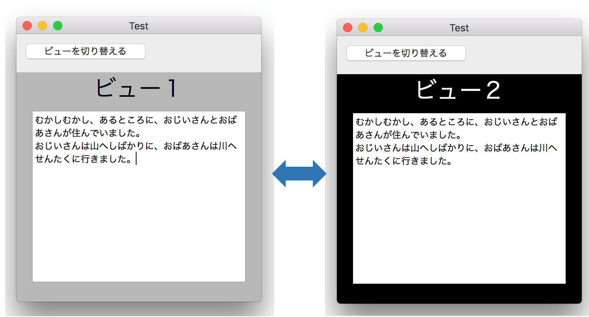
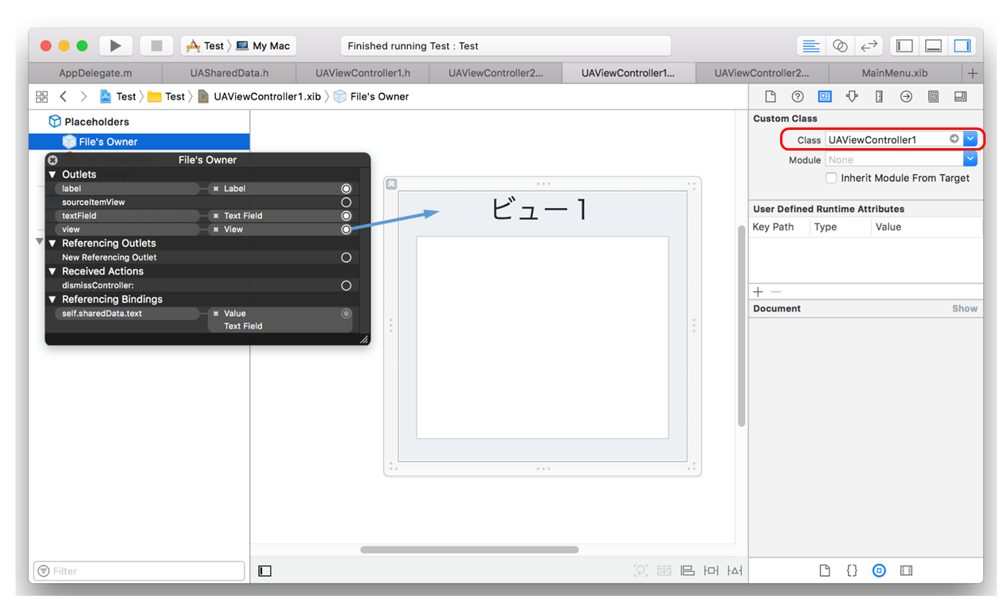
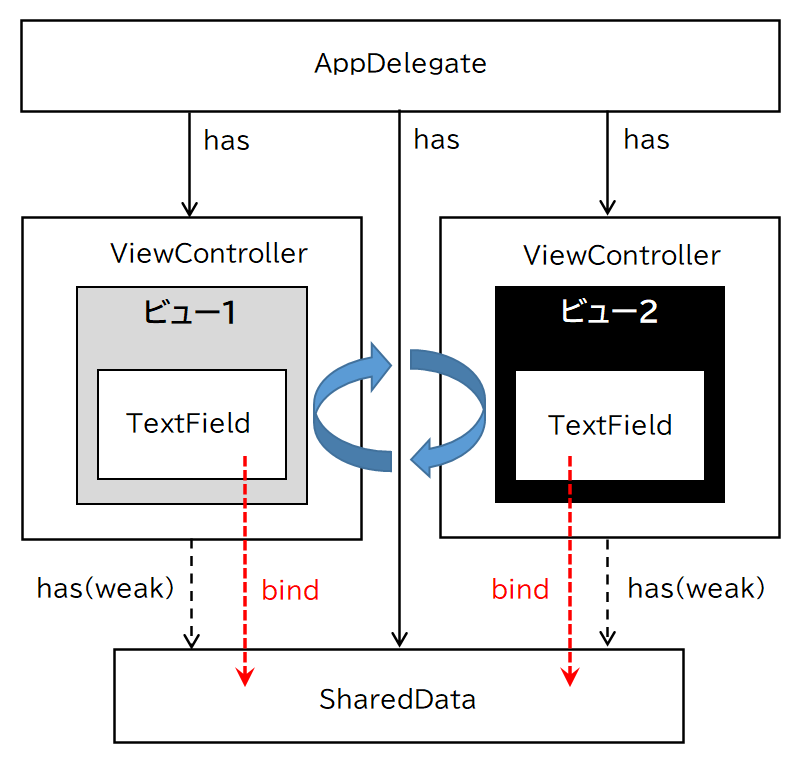

複数のビューを切り替える
ひとつのウィンドウの中で複数のビューを切り替えて表示する。ブラウザでタブをクリックしてウィンドウを切り替えるようなもの。

アプリケーションの仕組み
ビューはインタフェースビルダにより作成し、xibファイルに格納する。
xibファイルの定義ではビューオブジェクトのFile’s Owner は、ウィンドウコントローラクラスにする。File’s Owner の viewプロパティをビューオブジェクトにOutlet接続しておくこと。

クラス関連図
ビューコントローラ
それぞれのビューごとにビューコントローラを作成し、ビューのロードや各種コントロールの制御を行う。ビューコントローラは、NSViewControllerクラスのサブクラスとなる。
ビューコントローラが共用するデータオブジェクト
それぞれのビューコントローラは、ビュー間で共用するデータを参照・更新する。データオブジェクトはAppDelegateが所有者となり、各ビューコントローラは循環参照を避けるため弱い参照（weak）でオブジェクトを所有する。
ビューはテキストフィールドにデータオブジェクトのデータを表示する。データは編集可能とする。テキストフィールドとデータオブジェクトはバインドし、テキストフィールドの編集の結果が自動的に更新されるようにする。
AppDelegate
AppDelegateクラスはウィンドウコントローラを保持し、ビューの切り替えの指示により所有するビューを交互に表示する。
例えばビュー２を表示するとは、ウィンドウのcontentViewに、ビュー２をaddSubviewメソッドで追加することである。そのとき、それまで表示していたビュー１はremoveFromSuperViewにより contentViewから外す。（そうしないとビューが限りなく蓄積されてしまう）
複数のビューを切り替える Swift版
Swift版における注意点
本題から外れるが、変数をバインドするとき、Swiftのコードで特有の記法がある。